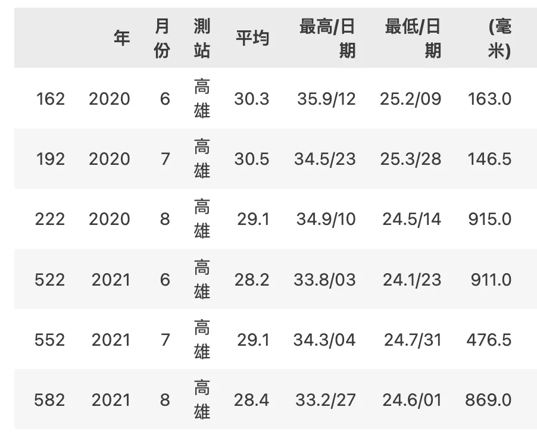
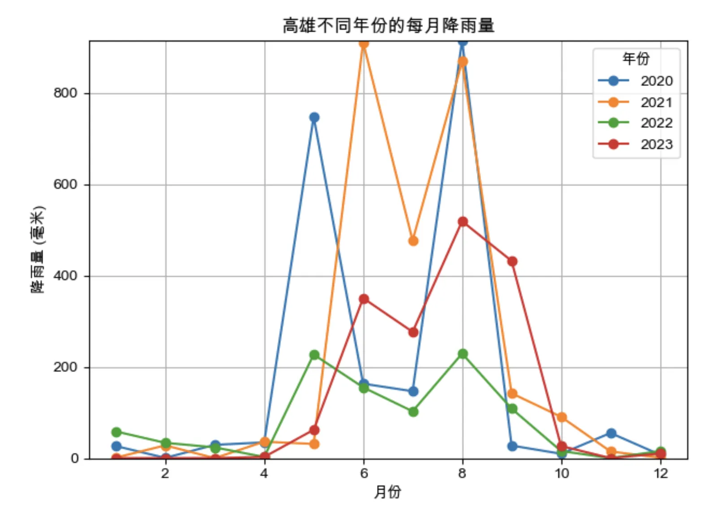
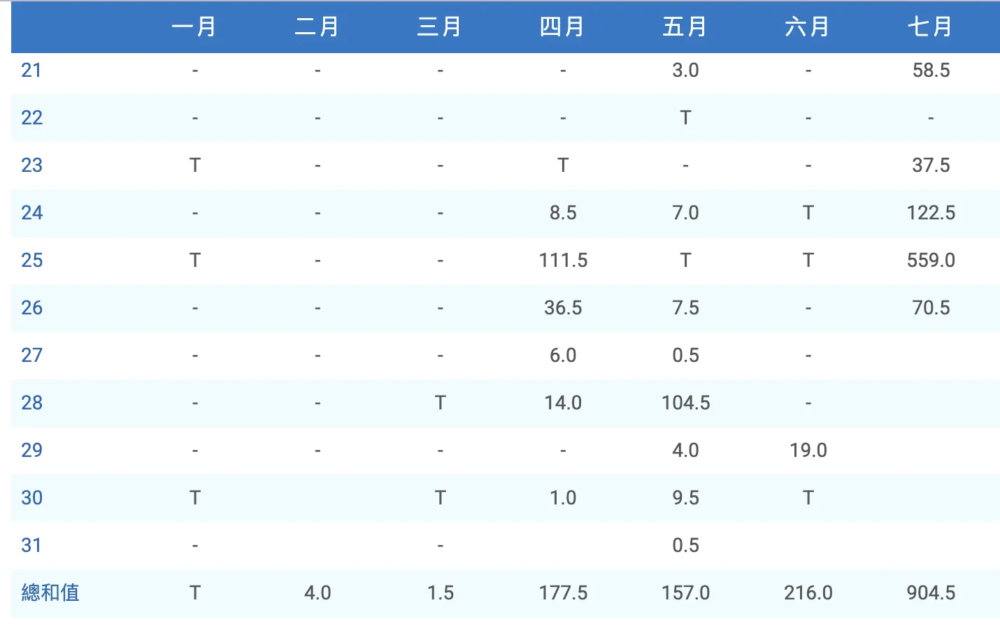
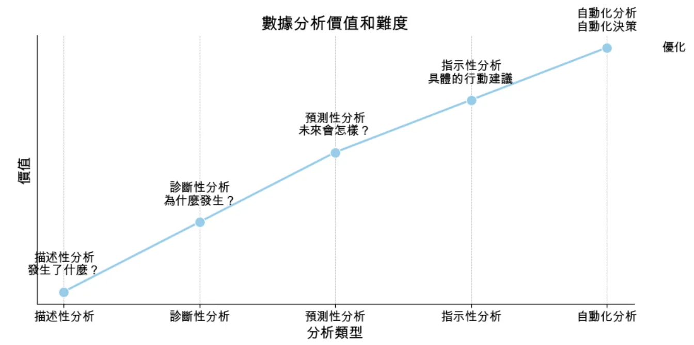

第一週-資料科學介紹
探索人工智慧、資料科學和數據分析的世界！從資料到智慧的轉換，資料科學用四個層次解剖：資料→資訊→知識→智慧。進行過程如演義般：主題→數據前處理→探索分析→人工智慧與預測→結果演繹→決策。質問數據：描述、診斷、預測、指示、自動。了解過去、預測未來，資料科學助你洞悉智慧轉換之道。
資料科學
資料、資訊、知識與智慧
可以先了解一下，「資料」、「資訊」、「知識」和「智慧」四者之間的差別。
資料是未經處理的事實或數字，它們是零散的、沒有上下文的原始數據。例如：搜集每天天氣
資訊是對「資料」進行整理和處理後的結果，它通常包含了上下文或結構，使數據變得有意義。裡如：將資料計算出平均氣溫
知識是從「資訊」中提煉出的理解或洞見，是對資訊的解釋、理解和應用。例如：知道對應的氣溫要穿什麼衣服；例如經過大量數據分析後，每個禮拜運動三次、每次心跳130以上，是曾經的健康指標
智慧是運用「知識」作出明智決定的能力，它涉及到批判性思維、經驗和判斷力。例如：對知識做出洞見，比如29度，會帶著陽傘遮陽。
而資料科學就是嘗試將資料轉化成智慧的科學方式。其中過程可參考以下模式：
資料科學的過程
找到感興趣的主題→取得相關資料→進行資料前處理與清洗得到資訊→進行探索性分析→利用人工智慧(選擇適當的方式或模型)進行資料之間的相關性與預測→畫出資料並給予解釋→作出決策
而數據再進行分析的時候可以分成「描述性分析」、「診斷性分析」、「預測性分析」、「指示性分析」與「自動性分析」：
描述性分析-發生了什麼？可以從數據檢視環境發生過什麼事情，並透過資料視覺化進行敘述。例如台灣年降雨量分析：
- 高雄歷年在暑假的降雨量最多。

- 一個月最多下900毫米，2024年7月25日一天降雨量550毫米。


診斷性分析-為什麼發生？經過數據調查
犯罪率在下雨天時比較低：戶外活動減少、天氣對情緒和行為的影響、巡邏員警增加…
尿布和啤酒的銷售量是正向關係(晚間購物時間段內，疲憊的父母同時購買尿布和啤酒。然而，也有研究未能找到顯著的關聯，這讓人質疑這個故事的普遍適用性。)
Ref:https://medium.com/@eggpig12/大數據比你更了解你自己-才怪-買啤酒才不會順便買尿布-da5432a59d0a
預測性分析-未來會怎樣？
指示性分析-提供具體的行動建議
金融服務：台灣的銀行和金融機構利用預測性分析來進行風險管理和信用評估。透過分析客戶的交易歷史和信用記錄來預測未來的違約風險，從而做出貸款和信用卡申請的決策。
零售業：台灣的零售商使用預測性分析來預測銷售趨勢和消費者行為。例如，分析過去的銷售數據來預測特定商品的需求高峰期，並提前備貨。
自動性分析-自動給予最佳行動計劃
總結來說，資料科學幫助我們從理解過去到計劃未來，這五個層次的數據分析各有其價值。從事後諸葛到洞燭先機，難度也從簡單到複雜。
